폐기물처리기사 (2011-10-02 기출문제)
1과목: 폐기물 개론
1. 다음 중 관거를 이용한 쓰레기의 수송에 관한 설명으로 옳지 않은 것은?
- 설치비가 높고, 가설 후에 경로변경이 곤란하다.
- 조대쓰레기는 파쇄 등의 전처리가 필요하다.
- 쓰레기의 발생밀도가 높은 인구밀집지역에서 현실성이 있다.
- 잘못 투입된 물건의 회수가 용이하다.
(정답률: 알수없음)

2. 투입량이 1.0 t/hr이고, 회수량이 600kg/hr(그중 회수대상물질은 550kg/hr)이며 제거량은 400kg/hr (그중 회수대상물질은 70kg/hr)일 때 선별효율은? (단, Worrell식 적용)
- 59%
- 69%
- 77%
- 84%
(정답률: 알수없음)
3. 다음 중 폐기물의 발생량 예측방법이 아닌 것은?
- Load-count analysis method
- Trend method
- Multiple regression model
- Dynamic silmulation model
(정답률: 알수없음)
4. 1일 폐기물 발생량이 1,244톤인 도시에서 6톤 트럭(적재가능량)을 이용하여 쓰레기를 매립지까지 운반하려고 한다. 다음과 같은 조건하에서 하루에 필요한 운반트럭의 대수는? (단, 예비차량 포함, 기타조건 고려하지 않음)
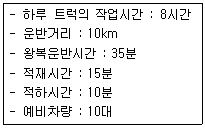
- 25대
- 29대
- 31대
- 36대
(정답률: 알수없음)
5. 다음 중 유해폐기물의 불법매립과 가장 관련이 갚은 사건은?
- 러브커넬 사건
- 도노라 사건
- 뮤즈계곡 사건
- 포자리카 사건
(정답률: 알수없음)
6. A도시의 쓰레기 수거대상 인구가 648,825명이며 이 도시의 쓰레기 배출량은 1.15kg/인·일이다. 수거 인부는 233명이며, 이들이 1일에 8시간을 작업한다면 이때 MHT는?
- 2.5
- 3.2
- 3.8
- 4.2
(정답률: 알수없음)
7. 3.5%의 고형물을 함유하는 슬러지 300m3를 탈수시켜 70%의 함수율을 갖는 케이크를 얻었다면 탈수된 케이크의 양은 몇 m3인가? (단, 슬러지의 밀도는 1ton/m3이다.)
- 35m3
- 40m3
- 45m3
- 50m3
(정답률: 알수없음)
8. 슬러지의 건조상의 설계를 위한 고려사항으로 가장 거리가 먼 것은?
- 일기
- 슬러지 성상
- 탈수보조제
- 토질의 증발력
(정답률: 알수없음)
9. 폐기물 발생량에 관한 다음 설명 중 가장 거리가 먼 것은?
- 상업지역, 주택지역 등 장소에 따라 발생량과 성상이 달라진다.
- 대체로 생활수준이 향상되면 발생량이 증가한다.
- 일반적으로 수집빈도가 높을수록 원활한 처리로 인해 발생량은 감소한다.
- 쓰레기통이 클수록 버리기 쉬워 발생량은 증가한다.
(정답률: 알수없음)
10. 효과적인 수거노선 설정에 관한 설명으로 가장 거리가 먼 것은?
- 적은 양의 쓰레기가 발생하나 동일한 수거빈도를 받기를 원하는 수거지점은 가능한 한 같은 날 왕복 내 수거되지 않도록 한다.
- 가능한 한 지형지물 및 도로 경계와 같은 장벽을 이용하여 간선도로 부근에서 시작하고 끝나도록 배치하여야 한다.
- U자형 회전은 피하고 많은 양의 쓰레기가 발생되는 발생원은 하루 중 가장 먼저 수거하도록 한다.
- 가능한 한 시계방향으로 수거노선을 정한다.
(정답률: 알수없음)
11. 트롬멜 스크린에 관한 설명으로 옳지 않은 것은?
- 스크린의 경사도가 크면 효율이 떨어지고 부하율도 커진다.
- 최적속도는 경험적으로 임계속도×0.45 정도이다.
- 스크린 중 유지관리상의 문제가 적고, 선별효율이 좋다.
- 스크린의 경사도는 대개 20 ~ 30° 정도이다.
(정답률: 알수없음)
12. 다음 중 “Characteristic particle size"에 관한 설명으로 가장 적합한 것은?
- 입자의 무게 기준으로 53.2%가 통과할 수 있는 체의 눈의 크기
- 입자의 무게 기준으로 63.2%가 통과할 수 있는 체의 눈의 크기
- 입자의 무게 기준으로 73.2%가 통과할 수 있는 체의 눈의 크기
- 입자의 무게 기준으로 83.2%가 통과할 수 있는 체의 눈의 크기
(정답률: 알수없음)
13. 어느 폐기물의 성분을 조사한 결과 플라스틱의 함량이 20%(중량비)로 나타났다. 이 폐기물의 밀도가 300kg/m3이라면 6.5m3 중에 함유된 플라스틱의 양은 몇 kg인가?
- 300kg
- 345kg
- 390kg
- 415kg
(정답률: 알수없음)
14. 고형폐기물의 파쇄처리로 기대할 수 있는 효과로 가장 거리가 먼 것은?
- 용적감소
- 겉보기 비중의 증가
- 부식효과 억제
- 입경의 고른 분포
(정답률: 알수없음)
15. 청소상태의 평가방법에 관한 설명으로 옳지 않은 것은?
- 지역사회 효과지수는 가로 청소상태의 문제점이 관찰되는 경우 각 25점씩 감점한다.
- 지역사회 효과지수에서 가로 청결상태의 scale은 1~4로 정하여 각각 100,75,50,25,0점으로 한다.
- 사용자 만족도 지수는 서비스를 받는 사람들의 만족도를 설문조사하여 계산되며 설문 문항은 6개로 구성되어 있다.
- 지역사회 효과지수는 가로의 청소상태를 기준으로 평가한다.
(정답률: 알수없음)
16. X90=4.6cm로 도시폐기물을 파쇄하고자 할 때 (즉, 90% 이상을 4.6cm보다 작게 파쇄하고자 할때) Rosin-Rammler 모델에 의한 특성입자크기 X0는? (단, n=1로 가정)
- 1.7cm
- 1.9cm
- 2.0cm
- 2.3cm
(정답률: 알수없음)
17. 폐기물적재차량 중량이 28500kg, 빈차의 중량이 15000kg, 적재함의 크기는 가로 300cm, 세로 150cm, 높이 500cm 일 때 단위 용적당 적재량(t/m3)은?
- 0.22
- 0.46
- 0.60
- 0.81
(정답률: 알수없음)
18. 발생 쓰레기 밀도 500kg/m3, 차량적재용량 6m3, 압축비 2.0, 발생량 1.1kg/인·일, 차량적재함 이용율 85%, 차량수 3대, 수거 대상인구 15,000명, 수거인부 5명의 조건에서 차량을 동시 운행할 때, 쓰레기 수거는 일주일에 최소 몇 회 이상 하여야 하는가?
- 4
- 6
- 8
- 10
(정답률: 알수없음)
19. 약간 경사진 판에 진동을 주어 무거운 것이 빨리 경사판 위로 올라가는 원리를 이용한 폐기물 선별 장치는?
- Bed separator
- Secators
- Stoners
- Jigs
(정답률: 알수없음)
20. 쓰레기 선별에 관한 설명으로 옳지 않은 것은?
- 관성선별은 가벼운 것(유기물)과 무거운 것(무기물)을 분리한다.
- 손선별은 정확도가 높고 파쇄공정 유입전 폭발가능 위험물질을 분류할 수 있는 장점이 있다.
- Zigzag 공기 선별기는 컬럼의 층류를 발달시켜 선별효율을 증진시킨 것이다.
- 진동 스크린 선별은 주로 골재 분리에 많이 이용 하며 체경이 막히는 문제가 발생할 수 있다.
(정답률: 알수없음)
2과목: 폐기물 처리 기술
21. 유해폐기물의 고형화 방법 중 열가소성 플라스틱법에 관한 설명으로 옳지 않은 것은?
- 높은 온도에서 분해되는 물질에는 사용할 수 없다.
- 용출 손실율이 시멘트 기초법에 비해 상당히 높다.
- 혼합율(MR)이 비교적 높다.
- 고화처리된 폐기물성분을 나중에 회수하여 재활용할 수 있다.
(정답률: 알수없음)
22. 어느 도시의 쓰레기 발생량은 1,000t/일, 밀도는 0.5t/m3이며, trench법으로 매립할 계획이다. 압축에 따른 부피감소율 40%, trench 깊이 2.0m, 매립에 사용되는 도랑면적 점유율이 전체부지의 60% 라면 연간 필요한 전체 부지 면적은?
- 94,000m2
- 143,000m2
- 292,000m2
- 365,000m2
(정답률: 알수없음)
23. 해안 매립공법 중 순차 투입공법에 관한 설명으로 가장 거리가 먼 것은?
- 쓰레기 지반안정화 및 매립부지 조기이용 등에 유리하지만 매립효율이 떨어진다.
- 부유성 쓰레기의 수면확산에 의해 수면부와 육지부 경계구분이 어려워 매립장비가 매몰되기도 한다.
- 수심이 깊은 처분장에서는 건설비 과다로 내수를 완전히 배제하기가 곤란한 경우에는 이 방법을 택하는 경우가 많다.
- 호안측에서부터 점차적으로 쓰레기를 투입하여 육지화하는 방법이다.
(정답률: 알수없음)
24. 합성차수막인 CSPE에 관한 설명으로 옳지 않은 것은?
- 미생물에 강하다.
- 기름, 탄화수소 및 용매류에 강하다.
- 접합이 용이하다.
- 산과 알칼리에 특히 강하다.
(정답률: 알수없음)
25. 침출수가 점토층을 통과하는데 소요되는 시간을 계산하는 식으로 옳은 것은? (단, t:통과시간(year), d:점토층두께(m), h:침출수수두(m), K:투수계수(m/year), n:유효공극율)
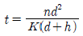
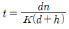
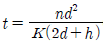
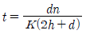
(정답률: 알수없음)
26. RDF를 소각로에서 사용시 문제점에 관한 설명으로 가장 거리가 먼 것은?
- 시설비가 고가이고, 숙련된 기술이 필요하다.
- 연료공급의 신뢰성 문제가 있을 수 있다.
- Cl 함량 및 연소먼지 문제는 거의 없지만, 유황함량이 많아 SOx 발생이 상대적으로 많은 편이다.
- 소각시설의 부식발생으로 수명단축의 우려가 있다.
(정답률: 알수없음)
27. 다음 중 매립지 바닥이 두껍고(지하수면이 지표면으로부터 깊은 곳에 있는 경우) 또한 복토로 적합한 지역에 이용하는 방법으로 거의 단층매립만 가능한 공법으로 가장 적합한 것은?
- 도랑굴착매립공법
- 압축매립공법
- 샌드위치공법
- 순차투입공법
(정답률: 알수없음)
28. 다음 유해성물질 중 침전, 이온교환기술을 적용하여 처리하기에 가장 어려운 것은?
- As
- CN
- Pb
- Hg
(정답률: 알수없음)
29. 기계식 반응조 퇴비화 공법에 관한 설명으로 옳지 않은 것은?
- 퇴비화가 밀폐된 반응조내에서 수행된다.
- 일반적으로 퇴비화 원료물질의 성분에 따라 수직형과 수평형으로 나뉘어 퇴비화를 수행한다.
- 수직형 퇴비화 반응조는 반응조 전체에 최적조건을 유지하기 어려워 생산된 퇴비의 질이 떨어질 수 있다.
- 수평형 퇴비화 반응조는 수직형 퇴비화 반응조와 달리 공기흐름 경로를 짧게 유지할 수 있다.
(정답률: 알수없음)
30. 슬러지의 혐기성 소화 가스 중의 이산화탄소의 함량이 30%, 메탄 함량이 70% 라고 할 때 소화조의 작동상태로 가장 적합한 것은?
- 불안정한 정상 상태이다.
- 비정상적인 상태이다.
- 평균적인 정상 상태이다.
- 소화로 인하여 가스발생량이 증가한 상태이다.
(정답률: 알수없음)
31. BOD가 15000mg/L, Cl이 800ppm인 분뇨를 희석하여 활성슬러지법으로 처리한 결과 BOD가 45mg/L, Cl이 40ppm이었다면 활성슬러지법의 처리효율은? (단, 희석수 중에 BOD, Cl-은 없음)
- 92%
- 94%
- 95%
- 98%
(정답률: 알수없음)
32. 퇴비화에 관한 설명으로 가장 거리가 먼 것은?
- 퇴비가 완성된 후에도 부피가 크게 감소하지는 않아 통상 50% 이하이다.
- 퇴비화 후에는 C/N비 값이 70~85 정도로 높아진다.
- 다양한 재료를 이용하므로 퇴비제품의 품질표준화가 어렵다.
- 운영시 소요되는 에너지가 낮고, 생산품인 퇴비는 토양 개량제로도 사용할 수 있다.
(정답률: 알수없음)
33. 다량의 분뇨를 일시에 소화조에 투입할 때 일반적으로 나타나는 장해라 볼 수 없는 것은?
- 스컴(scum)의 발생 증가
- pH 저하
- 유기산의 저하
- 탈리액의 인출 불균등
(정답률: 알수없음)
34. 슬러지를 처리하기 위해 위생처리장 활성 슬러지 1%농도의 폐액 100m3 을 농축조에 넣었더니 2.5% 슬러지로 농축되었다. 농축조에 농축되어 있는 슬러지양은? (단, 상징액의 농도는 고려하지 않으며, 비중은 1.0)
- 20m3
- 25m3
- 30m3
- 40m3
(정답률: 알수없음)
35. LFG 중 CO2 제거공정과 가장 거리가 먼 것은?
- 흡수, 흡착법
- 화학적 전환법
- 고온분리 : 고온 증류에 의해 분리
- 막분리 : 막으로 선택적 통과 분리
(정답률: 알수없음)
36. 차수막의 종류 중 PVC의 장점에 관한 설명으로 가장 거리가 먼 것은?
- 자외선, 오존 및 기후에 강하다.
- 접합이 용이하다.
- 강도가 높다.
- 작업이 용이하다.
(정답률: 알수없음)
37. 분뇨 저장탱크 내의 악취발생 공간 체적이 40m3이고 이를 시간당 5차례식 교환하고자 한다. 발생된 악취공기를 퇴비 여과방식을 채택하여 투과속도 20m/h로 처리하고자 할 때 필요한 퇴비여과상의 면적은 몇 m2인가?
- 6m2
- 8m2
- 10m2
- 12m2
(정답률: 알수없음)
38. 토양 중 유기성 오염물질을 제거하기 위한 바이오벤팅(Bioventing)에 관한 설명으로 옳지 않은 것은?
- 휘발성이 강하거나 분자량이 작은 유기물질의 처리가 어렵다.
- 불포화 토양층내에 산소를 공급함으로써 미생물의 분해를 통해 유기물질을 분해 처리한다.
- 일반적으로 토양증기추출에 비하여 토양공기의 추출량이 약 1/10 수준이다.
- 기술 적용시에는 대상부지에 대한 정확한 산소소모율의 산정이 중요하다.
(정답률: 알수없음)
39. 토양 복원기술 중 압력 및 농도구배를 형성하기 위하여 추출정을 굴착하여 진공상태로 만들어 줌으로써 토양내의 휘발성 오염물질을 휘발, 추출하는 기술은?
- Biopile
- Bioaugmentation
- Soil vapor extraction
- Thermal Decomposition
(정답률: 알수없음)
40. 슬러지 개량(Conditioning)에 관한 설명으로 옳지 않은 것은?
- 농축슬러지나 소화슬러지는 여러 유기물과 형상이 다양한 미세 고형물 및 콜로이드로 구성되고, 물과 강한 친화력으로 탈수가 쉽지 않으므로 슬러지를 개량한다.
- 진공여과기로 슬러지 탈수시, 슬러지 개량에 투입하는 응집제는 유기계통의 응집제를 사용한다.
- 열처리는 슬러지액을 밀폐된 상황에서 150~200℃ 정도의 온도로 반시간~한시간 정도 처리함으로서 슬러지 내의 콜로이드와 겔구조를 파괴하여 탈수성을 개량한다.
- 수세로 슬러지를 개량하는 방법은 혐기성 소화된 슬러지가 대상이 된다.
(정답률: 알수없음)
3과목: 폐기물 소각 및 열회수
41. 소각로에 열교환기를 설치, 배기가스의 열을 회수하여 급수 예열에 사용할 때 급수 출구온도는 몇℃인가? (단, 배기 가스량 : 100 kg/hr, 급수량 : 200 kg/hr, 배기가스 열교환기 유입온도 : 500℃, 출구온도 : 200℃, 급수의 입구온도 : 10℃, 배기가스정압 비열:0.24 kcal/kg · ℃)
- 26
- 36
- 46
- 56
(정답률: 알수없음)
42. 다단로식 소각로에 관한 설명으로 옳지 않은 것은?
- 유해폐기물의 완전분해를 위해서는 2차 연소실이 필요하다.
- 액상 및 기상 폐기물의 이용은 보조연료의 양을 감소시켜 운전비용을 절감할 수 있는 경제적 이점이 있다.
- 건조, 연소 등 가동영역이 다양하여 먼지발생율이 낮고, 2차 연소실이 불필요하다.
- 체류시간이 길어 특히 휘발성이 적은 폐기물 연소에 유리하다.
(정답률: 알수없음)
43. 20m3용적의 소각로에서 연소실 열발생율이 20,000 kcal/m3·hr로 하기 위해 저위발열량이 8000kcal/kg인 폐기물 투입량은?
- 100kg/hr
- 75kg/hr
- 50kg/hr
- 25kg/hr
(정답률: 알수없음)
44. 소각할 쓰레기의 양이 12,760kg/day이다. 1일 10시간 소각로를 가동시키고 화격자의 면적이 7.25m2 일 경우 이 쓰레기 소각로의 소각능력은?
- 116kg/m2 · hr
- 138kg/m2 · hr
- 176kg/m2 · hr
- 189kg/m2 · hr
(정답률: 알수없음)
45. 관성력 집진장치의 효율향상 조건으로 거리가 먼 것은?
- 일반적으로 충돌직전의 처리가스의 속도가 크고, 처리후의 출구 가스속도는 늦을수록 미립자의 제거가 쉽다.
- 기류의 방향전환 각도가 작고, 방향전환 횟수가 많을수록 압력손실은 커지나 집진은 잘된다.
- 적당한 모양과 크기의 호퍼가 필요하다.
- 함진가스의 충돌 또는 기류의 방향전환 직전의 가스속도가 작고, 방향전환시에 곡률반경이 클수록 미세입자의 포집이 가능하다.
(정답률: 알수없음)
46. RDF를 대량 사용하고자 할 경우의 구비조건에 관한 설명으로 옳지 않은 것은?
- 함수율이 낮을 것
- 칼로리가 낮을 것
- 재의 양이 적을 것
- RDF의 조성이 균일할 것
(정답률: 알수없음)
47. 증기터어빈의 분류관점에 따른 터어빈 형식의 연결로 옳지 않은 것은?
- 증기 이용방식 - 축류 터어빈, 반경류 터어빈
- 흐름수 - 복류 터어빈, 단류 터어빈
- 피구동기 - 감속형 터어빈, 직결형 터어빈
- 증기 작동방식 - 혼합식 터어빈, 반동 터어빈
(정답률: 알수없음)
48. CH4 75%, CO2 5%, N2 8%, O2 12%로 조성된 기체연료 1Sm3을 10Sm3의 공기로 연소한다면 이때 공기비는?
- 1.22
- 1.32
- 1.42
- 1.52
(정답률: 알수없음)
49. Rotary kiln 소각로의 장점으로 거리가 먼 것은?
- 드럼이나 대형 용기를 그대로 집어넣을 수 있다.
- 습식가스 세정시스템과 함께 사용할 수 있다.
- 용융상태의 물질에 의하여 방해받지 않는다.
- 처리량이 적은 경우, 설치비가 저렴하다.
(정답률: 알수없음)
50. 액체주입형 연소기에 관한 설명으로 가장 거리가 먼 것은?
- 구동장치가 없어서 고장이 적다.
- 하방점화방식의 경우에는 염이나 입상물질을 포함한 폐기물의 소각도 가능하다.
- 이 연소기의 가장 일반적인 형식은 수평 점화식이다.
- 버너노즐 없이 액체미립화가 용이하며, 대량처리에 주로 사용된다.
(정답률: 알수없음)
51. 소각로에 발생하는 질소산화물의 발생억제방법으로 옳지 않은 것은?
- 버너 및 연소실의 구조를 개선한다.
- 배기가스를 재순환한다.
- 예열온도를 높여 연소온도를 낮춘다.
- 2단 연소시킨다.
(정답률: 알수없음)
52. 소각로 배기가스 중 HCl 농도가 544ppm이면 이는 몇 mg/Sm3에 해당하는가? (단, 표준상태 기준)
- 약 665
- 약 789
- 약 886
- 약 978
(정답률: 알수없음)
53. 화격자(Grate or Stoker) 연소기에 관한 설명으로 가장 거리가 먼 것은?
- 고온 중에서 기계적으로 구동하므로 금속부의 마모 손실이 심한 편이다.
- 체류시간이 짧고, 교반력이 강하며, 열에 쉽게 용융되는 물질의 소각에 효과적이다.
- 경사 stoker 방식은 수분이 많은 것이나 발열량이 낮은 것도 어느 정도 소각이 가능하다.
- 휘발성분이 많고 열분해하기 쉬운 물질을 태울 경우에는 공기를 위쪽에서 아래쪽으로 통과시키는 하향식 연소방식을 쓴다.
(정답률: 알수없음)
54. 쓰레기 1톤을 소각처리 하고자 한다. 쓰레기 조성이 다음과 같을 때 이론공기량은? (단, C: 60%, H: 18%, O: 22%)
- 약 6600Sm3
- 약 7300Sm3
- 약 8200Sm3
- 약 9400Sm3
(정답률: 알수없음)
55. 소각로내 연소가스와 폐기물 흐름에 따른 조작 방법에 대한 설명으로 옳지 않은 것은?
- 병류식은 폐기물 이송방향과 연소가스의 흐름방향이 같은 형식으로 건조대에서의 건조효율이 저하될 수 있다.
- 역류식은 수분이 적고 저위발열량이 낮은 쓰레기에 적합하며 후연소내의 온도저하나 불완전연소의 염려가 없다.
- 교류식은 역류식과 병류식의 중간적인 형식이다.
- 복류식은 2개의 출구를 가지고 있고 댐퍼의 개폐로 역류식, 병류식, 교류식으로 조절할 수 있어 폐기물의 질이나 저위발열량의 변동이 심할 경우에 사용한다.
(정답률: 알수없음)
56. 착화온도에 관한 설명으로 옳지 않은 것은?
- 화학적 발열량이 클수록 착화온도는 높다.
- 분자구조가 간단할수록 착화온도는 높다.
- 화학 결합의 활성도가 클수록 착화온도는 낮다.
- 화학반응성이 클수록 착화온도는 낮다.
(정답률: 알수없음)
57. 메탄(C2H6)의 고위발열량이 16620kcal/Sm3 이라면 저위발열량은?
- 14880 kcal/Sm3
- 14980 kcal/Sm3
- 15180 kcal/Sm3
- 15380 kcal/Sm3
(정답률: 알수없음)
58. 소각시 탈취방법인 촉매법과 연소법(직접, 가열)에 관한 설명으로 옳지 않은 것은?
- 직접연소법 : 연소장치 설계시 오염물의 폭발한계점 또는 인화점을 잘 알아야 한다.
- 직접연소법 : HC, H2, NH3, HCN 및 유독성가스의 제거법으로 사용한다.
- 촉매연소법 : 장치의 부시고가 처리대상 가스의 제한이 없는 것이 장점이다.
- 촉매연소법 : 촉매를 사용하여 연소에 필요한 활성화에너지를 낮춤으로서 연소가 효과적으로 일어난다.
(정답률: 알수없음)
59. 유동층 소각로에 관한 설명으로 가장 거리가 먼것은?
- 상(床)으로부터 찌꺼기의 분리가 어렵다.
- 가스온도가 높고 과잉공기량이 커 NOx가 많이 배출된다.
- 폐기물의 투입이나 유동화를 위해 파쇄가 필요하다.
- 기계적 구동부분이 적어 고장율이 낮다.
(정답률: 알수없음)
60. 열교환기인 과열기에 관한 설명으로 옳지 않은 것은?
- 대류형 과열기는 화실의 천정부 또는 로벽에 배치되고 주로 화염에 따른 대류를 이용한다.
- 방사 ‧ 대류형 과열기는 대류 전달면 입구 가까이에 설치하고 방사열과 대류 전달열을 동시에 이용하는 과열기이다.
- 일반적으로 보일러의 부하가 높아질수록 대류 과열기에 의한 과열온도가 상승한다.
- 과열기의 재료는 탄소강, 니켈, 크롬, 몰리브덴, 바나듐 등을 함유한 특수 내열 강관을 사용한다.
(정답률: 알수없음)
4과목: 폐기물 공정시험기준(방법)
61. 어떤 폐기물의 수분을 측정하기 위해 실험하였더니 다음과 같은 결과를 얻었다. 수분은 몇 %인가?
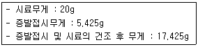
- 30%
- 40%
- 50%
- 60%
(정답률: 알수없음)
62. 폐기물 공정시험기준(방법)에서 pH 표준용액에 관한 설명으로 옳지 않은 것은?
- 표준용액에 사용되는 물은 정제수를 종류하여 이산화탄소를 날려 보내고 무수칼륨 흡수관을 부착, 사용한다.
- 경질유리병 또는 폴리에틸렌병에 보관하여 사용한다.
- 산성표준용액은 3개월 이내에 사용한다.
- 염기성표준용액은 생석회 흡수관을 부착하여 1개월 이내에 사용한다.
(정답률: 알수없음)
63. 용출실험의 결과에서 시료 중의 수분함량을 보정하기 위해 곱하는 식으로 옳은 것은? (단, 함수율 85% 이상인 시료에 한함)
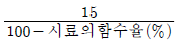
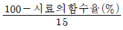
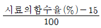
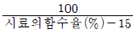
(정답률: 알수없음)
64. 다음 중 폐기물공정시험기준(방법)에서 규정하고 있는 유기인 화합물(기체크로마토그래피법)의 측정대상 성분으로 거리가 먼 것은?
- 이피엔
- 펜토에이트
- 디티온
- 다이아지논
(정답률: 알수없음)
65. 폐기물의 시료채취 방법에 관한 설명으로 옳지 않은 것은?
- 시료의 양은 1회에 100g 이상 채취하며 다만 소각재의 경우에는 1회에 300g 이상을 채취한다.
- 폐기물소각시설의 연속식 연소방식 소각재 반출설에서 채취하는 경우, 바닥재 저장조에서는 부설된 크레인을 이용하여 채취한다.
- 폐기물소각시설의 연속식 연소방식 소각재 반출설비에서 채취하는 경우, 비산재 저장조에서는 낙하구 밑에서 채취한다.
- 시료가 대형콘크리트 고형화물로써 분쇄가 여려울때는 임의의 5개소에서 채취하여 각각 파쇄하여 100g씩 균등량을 혼합하여 채취한다.
(정답률: 알수없음)
66. 원자흡수분광광도법에 의한 수은 분석방법에 관한 설명으로 옳지 않은 것은?
- 수은증기를 253.7nm 파장에서 측정한다.
- 시료 중 수은을 이염화주석을 넣어 금속수은으로 환원시킨다.
- 시료 중 염화물이온이 다량 함유된 경우에는 과망간산칼륨 분해 후 헥산으로 이들 물질을 추출 분리한 다음 실험한다.
- 이 실험에 의한 폐기물 중 수은의 정량한계는 0.00⑤mg/L 이다.
(정답률: 알수없음)
67. 폐기물이 적재되어 있는 운반차량에서 시료를 채취할 경우 5톤 이상의 차량에 적재되어 있을 때에는 적재폐기물을 평면상에서 몇 등분 한 후 각 등분마다 시료를 채취하는가?
- 4등분
- 6등분
- 7등분
- 9등분
(정답률: 알수없음)
68. 원자흡수분광광도법에 의한 비소분석방법에 관한 설명으로 옳지 않은 것은?
- 이염화주석으로 시료 중의 비소를 3가비소로 환원한 다음 아연을 넣는다.
- 193.7nm 파장에서 흡광도를 측정한다.
- 정량한계는 0.0⑤mg/L 이다.
- 낮은 농도의 비소는 암모니아 카르보닐 카르티노이드(ACC)와 착물을 생성시켜 노말헥산으로 추출하여 공기-아세틸렌 불꽃에 주입하여 분석한다.
(정답률: 알수없음)
69. 기체크로마토그래피에 의한 폴리클로리네이티드비페닐(PCBs) 분석방법에 관한 설명으로 옳지 않은 것은?
- 용출용액의 경우 각 PCB류의 정량한계는 0.0⑤mg/L이며, 액상 폐기물의 정량한계는 0.⑤mg/L이다.
- 비항침성 고상 폐기물의 정량한계는 시료채취방법에 따라 표면 채취법은 0.1㎍/100 cm2으로 하고, 부재채취법은 0.⑤ mg/kg이다.
- 알칼리 분해를 하여도 헥산 층에 유분이 존재할 경우에는 실리카겔 컬럼으로 정제조작을 하기 전에 플로리실 컬럼을 통과시켜 유분을 분리한다.
- 시료 중 PCBs을 헥산으로 추출하여 실리카겔컬럼등을 통과시켜 정제한 다음 기체크로마토그래프에 주입한다.
(정답률: 알수없음)
70. 다음은 자외선/가시선 분광광도계의 광원에 관한 설명이다. ( )안에 알맞은 것은?
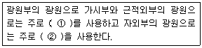
- ① 텅스텐램프, ② 중수소 방전관
- ① 중수소 방전관, ② 텅스텐램프
- ① 할로겐램프, ② 헬륨 방전관
- ① 헬륨 방전관, ② 할로겐램프
(정답률: 알수없음)
71. 용출시험방법의 용출조작에 관한 설명으로 옳지 않은 것은?
- 시료액의 조제가 끝난 혼합액은 유리섬유 여과지로 여과하여 진탕용 시료로 한다.
- 진탕용 시료는 분당 약 200회, 진폭 4~5cm인 진탕기를 사용하여 6시간 연속 진탕한다.
- 원심분리기를 사용할 필요가 있는 경우는 3000rpm 이상으로 20분 이상 원심분리한다.
- 시료를 원심분리한 경우는 상징액을 적당량 취하여 용출시험용 시료용액으로 한다.
(정답률: 알수없음)
72. 크롬 표준원액(100mg Cr/L) 1000mL를 만들기 위하여 필요한 다이크롬산칼륨(표준시약)의 양은?
- 0.213g
- 0.283g
- 0.353g
- 0.393g
(정답률: 알수없음)
73. 기체크로마토그래피에 의한 휘발성 저급염소화 탄화수소류 분석방법에 관한 설명으로 옳지 않은 것은?
- 시료 중의 트리클로로에틸렌 및 테트라클로로에틸렌을 헥산으로 추출하여 기체크로마토그래프로 정량하는 방법이다.
- 이 시험기준에 의해 시료 중에 트리클로로에틸렌(C2HCl3)의 정량한계는 0.008mg/L, 테트라클로로에틸렌(C2Cl4)의 정량한계는 0.002mg/L이다.
- 플루오르화탄소와 같은 휘발성 유기물은 보관이나 운반 중에 격막(septum)을 통해 시료 안으로 확산되어 시료를 오염시킬 수 있으므로 현장 바탕시료로서 이를 점검하여야 한다.
- 디클로로메탄과 같이 머무름 시간이 긴 화합물은 용매의 피크와 잘 분리되므로 분리효율이 좋다.
(정답률: 알수없음)
74. 자외선/가시선 분광광도계에서 사용하는 흡수셀의 준비사항으로 옳지 않은 것은?
- 흡수셀은 미리 깨끗하게 씻은 것을 사용한다.
- 흡수셀의 길이(L)를 따로 지정하지 않았을 때는 10mm셀을 사용한다.
- 시료셀에는 실험용액을, 대조셀에는 따로 규정이 없는 한 정제수를 넣는다.
- 시료용액의 흡수파장이 약 370nm 이하일 때는 경질유리 흡수셀을 사용한다.
(정답률: 알수없음)
75. 유기물 함량이 비교적 높지 않고 금속의 수산화물, 산화물, 인산염 및 황화물을 함유하고 있는 시료에 적용되는 전처리 방밥으로 가장 적합한 것은?
- 질산 - 염산 분해법
- 질산 - 황산 분해법
- 질산 - 과염소산 분해법
- 질산 - 불화수소산 분해법
(정답률: 알수없음)
76. 자외선/가시선 분광법에 의한 시안분석방법에 관한 설명으로 옳지 않은 것은?
- 시료를 pH 10~12의 알칼리성으로 조절한 후에 질산나트륨을 넣고 가열 증류하여 시안화합물을 시안화수소로 유출하는 방법이다.
- 클로라민-T와 피리딘‧피라졸론 혼합액을 넣어 나타나는 청색을 620nm에서 측정하는 방법이다.
- 시안화합물을 측정할 때 방해물질들은 증류하면 대부분 제거되나 다량의 지방성분, 잔류염소, 황화합물은 시안화합물을 분석할 때 간섭할 수 있다.
- 황화합물이 함유된 시료는 아세트산아연용액(10W/V %) 2mL를 넣어 제거한다.
(정답률: 알수없음)
77. 중금속 분석의 전처리인 질산-과염소산 분해법에 있어, 진한 질산이 공존하지 않는 상태에서 과염소산을 넣을 경우 어떤 문제가 발생될 수 있는가?
- 킬레이트형성으로 분해 효율이 저하됨
- 급격한 가열반응으로 휘산됨
- 폭발 가능성이 있음
- 중금속의 응집침전이 발생함
(정답률: 알수없음)
78. 이온전극법을 이용한 시안 분석방법에 관한 설명으로 가장 거리가 먼 것은?
- pH 12~13 알칼리성에서 시안 이온전극과 비교전극을 사용하여 전위를 측정한다.
- 시료와 표준용액의 측정시 온도차는 ±0.1℃이어야 하고 교반속도는 2,000rpm 이상으로 한다.
- 이 시험기준에 의한 폐기물 중에 시안의 정량한계는 0.5mg.L이다.
- 자석 교반기 또는 테플론으로 피복된 자석 바를 사용한다.
(정답률: 알수없음)
79. 중량법에 의한 기름성분 분석방법에 관한 설명으로 옳지 않은 것은?
- 시료를 직접 사용하거나, 시료에 적당한 응집제 또는 흡착제 등을 넣어 노말헥산 추출물질을 포집한 다음 노말헥산 추출물질을 포집한 다음 노말헥산으로 추출한다.
- 이 시험기준의 정량한계는 0.5% 이하로 한다.
- 폐기물중의 비교적 휘발되지 않는 탄화수소, 탄화수소 유도체, 그리스유상물질 중 노말헥산에 용해되는 성분에 적용한다.
- 눈에 보이는 이물질이 들어 있을 때에는 제거해야 한다.
(정답률: 알수없음)
80. 다음은 기체크로마토그래피에 사용되는 검출기에 관한 설명이다. ( )안에 알맞은 것은?
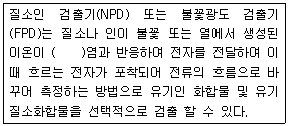
- 세슘
- 루비듐
- 프란슘
- 니켈
(정답률: 알수없음)
5과목: 폐기물 관계 법규
81. 국가 폐기물 관리 종합계획에 포함되어야 할 사항과 가장 거리가 먼 것은?
- 재원 조달 계획
- 종합계획실천 여건 및 향후 종합계획 전망
- 부문별 폐기물 관리 정책
- 종전의 종합계획에 대한 평가
(정답률: 알수없음)
82. 폐기물처리업체에 종사하는 폐기물 처리 담당자 등은 교육기관에서 실시하는 교육을 몇 년마다 받아야 하는가?
- 1년 마다
- 2년 마다
- 3년 마다
- 5년 마다
(정답률: 알수없음)
83. 기술관리인을 두어야 할 대통령령으로 정하는 폐기물처리시설(기준)에 해당하지 않는 것은?(단, 폐기물 처리업자가 운영하는 폐기물처리시설은 제외)
- 사료화‧퇴비화 또는 연료화시설로서 1일 재활용능력이 5톤 이상인 시설
- 압축‧파쇄‧분쇄 또는 절단시설로서 1일 처분능력 또는 재활용능력이 100톤 이상인 시설
- 의료폐기물을 대상으로 하는 소각시설로서 시간당 처분 능력이 100킬로그램 이상인 시설
- 지정폐기물 외의 폐기물을 매립하는 시설로서 면적이 1만 제곱미터 이상이거나 매립용적이 3만 세제곱미터 이상인 시설
(정답률: 알수없음)
84. 관리형 매립시설에서 발생하는 침출수의 배출허용기준으로 옳은 것은? (단, 나지역, 단위 mg/L, 중크롬산칼륨법에 의한 화학적 산소요구량 기준이며 ( )안의 수치는 처리효율을 표시함)
- 400(90%)
- 800(80%)
- 600(90%)
- 600(85%)
(정답률: 알수없음)
85. 폐기물 중간처리시설 중 기계적 처분시설에 해당하는 시설과 그 동력규모 기준으로 옳지 않은 것은?
- 압축시설(동력 10마력 이상인 시설로 한정)
- 파쇄분쇄시설(동력 10마력 이상인 시설로 한정)
- 절단시설(동력 10마력 이상인 시설로 한정)
- 용융시설(동력 10마력 이상인 시설로 한정)
(정답률: 알수없음)
86. 시장, 군수, 구청장이 관할구역 안의 폐기물 처리에 관한 기본계획 수립시 포함하여야 할 사항과 가장 거리가 먼 것은?
- 재원의 확보 계획
- 폐기물의 감량화와 재활용 등 자원화에 관한 사항
- 폐기물의 수집 ‧ 운반 현황 및 처리담당자 교육계획에 관한 사항
- 폐기물의 종류별 발생량과 장래의 발생 예상량
(정답률: 알수없음)
87. 폐기물관리법령상 다음 폐기물 중간처분시설의 분류(소각시설, 기계적 처분시설, 화학적 처분시설, 생물학적 처분시설) 중 화학적 처분시설에 해당하는 것은?
- 열 분해시설(가스화시설을 포함한다)
- 증발 ‧ 농축시설
- 유수 분리시설
- 고형화 ‧ 고화 ‧ 안정화 시설
(정답률: 알수없음)
88. 다음 중 지정폐기물(의료폐기물은 제외한다)의 처리기준 및 방법으로 거리가 먼 것은?
- 폐합성고분자화합물의 소각이 곤란할 경우에는 최대지름 15cm 이하의 크기로 파쇄 ‧ 절단 또는 용융한 후 지정 폐기물을 매립할 수 있는 관리형 매립시설에 매립할 수 있다.
- 액상의 폐알칼리는 분리 ‧ 증류 ‧ 추출 ‧ 여과의 방법으로 정제처분한다.
- 고체상태의 폐유(타르‧피치(pitch)류는 제외한다)는 소각하거나 안정화처분하여야 한다.
- 기타 폐유기용제로서 고체상태의 것은 관리형 매립시설에 매립처리 하여야 한다.
(정답률: 알수없음)
89. 다음은 사후관리이행보증금의 사전적립에 관한 설명이다. ( )에 알맞은 것은?
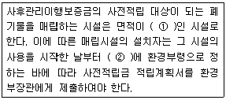
- ① 1천500제곱미터 이상, ② 1개월 이내
- ① 1천500제곱미터 이상, ② 15일 이내
- ① 3천300제곱미터 이상, ② 1개월 이내
- ① 3천300제곱미터 이상, ② 15일 이내
(정답률: 알수없음)
90. 폐기물처리사업장 외의 장소에서의 폐기물보관 시설 기준 중 폐기물재활용업자가 시 ‧ 도지사로부터 승인받은 보관시설에 태반을 보관하는 경우 시 ‧ 도지사가 해당 보관시설 승인시 따라야 하는 기준으로 옳지 않은 것은?
- 폐기물재활용업자는 「약사법」에 따른 의약품제조업 허가를 받은 자일 것
- 태반의 배출장소와 그 태반 재활용시설이 있는 사업장의 거리가 100킬로미터 이상일 것
- 보관시설에서의 태반보관 허용량은 10톤 미만일 것
- 보관시설에서의 태반보관기관은 태반이 보관시설에 도착한 날부터 5일 이내일 것
(정답률: 알수없음)
91. 폐기물처리시설 중 매립시설의 기술관리인의 자격기준으로 옳지 않은 것은?
- 건설기계기사
- 화공기사
- 일반기계기사
- 건설안전관리기사
(정답률: 알수없음)
92. 다음 중 폐기물처리업의 변경허가를 받아야 하는 중요사항으로 가장 거리가 먼 것은?
- 주차장 소재지의 변경(지정폐기물을 대상으로 하는 수집 ‧ 운반업만 해당한다)
- 운반차량(임시차량은 제외한다)의 증차
- 허가 또는 변경허가를 받은 처분용량의 100분의 20 이상의 변경(허가 또는 변경허가를 받은 후 변경되는 누계를 말한다)
- 폐기물처분시설 소재지나 영업구역의 변경
(정답률: 알수없음)
93. 폐기물처분시설인 멸균분쇄시설의 설치검사 항목으로 거리가 먼 것은?
- 분쇄시설의 작동상태
- 밀폐형으로 된 자동제어에 의한 처리방식인지 여부
- 악취방지시설 ‧ 건조장치의 작동상태
- 계량, 투입시설의 설치여부 및 작동상태
(정답률: 알수없음)
94. 환경부령이 정하는 사업장폐기물 배출자(지정폐기물 외의 사업장폐기물을 배출하는 자) 중 폐기물을 1일 평균 300킬로그램 이상 배출하는 자가 사업장폐기물의 발생지를 관할하는 특별자치도지사 또는 시장, 군수, 구청장에게 사업장폐기물의 종류와 발생량 등의 신고를 하여야 하는 기한 기준은?
- 사업개시일로부터 7일 이내
- 폐기물 배출예정일로부터 7일 이내
- 공사 착공일로부터 7일 이내
- 사업개시일 또는 폐기물을 배출한 날부터 1개월 이내
(정답률: 알수없음)
95. 관리형 매립시설에서 발생되는 침출수의 생물화학적 산소요구량의 배출허용기준(mg/L)은? (단, 청정지역 기준)
- 10
- 30
- 50
- 70
(정답률: 알수없음)
96. 의료폐기물 발생 의료기관 및 시험 ‧ 검사기관 기준으로 옳지 않은 것은?
- 군통합병원령에 의하여 대대급 이상 군부대에 설치된 의무시설
- 행형법에 의해 교도소 ‧ 소년교도소 ‧ 구치소 등에 설치된 의무시설
- 수의사법에 의한 동물병원
- 혈액관리법에 의한 혈액관리업무를 하는 혈액원
(정답률: 알수없음)
97. 설치승인을 받아 폐기물처리시설을 설치한 자가 그 폐기물처리시설의 사용을 끝내고자 할 때는 환경부장관에게 신고하여야 하는데, 그 신고를 하지 않은 경우 과태료 부과기준으로 옳은 것은?
- 1천만원 이하의 과태료를 부과
- 500만원 이하의 과태료를 부과
- 300만원 이하의 과태료를 부과
- 100만원 이하의 과태료를 부과
(정답률: 19%)
98. 폐기물관리법상 용어의 뜻으로 옳지 않은 것은?
- “폐기물감량화시설”이란 생산 공정에서 발생하는 폐기물의 양을 줄이고, 사업장 내 재활용을 통하여 폐기물 배출을 최소화하는 시설로서 대통령령으로 정하는 시설을 말한다.
- “처분”이란 폐기물의 소각 ‧ 중화 ‧ 파쇄 ‧ 고형화 등의 중간처분과 매립하거나 해역으로 배출하는 등의 최종처분을 말한다.
- “의료폐기물”이란 보건 ‧ 의료기관, 동물병원, 시험 ‧ 검사기관 등에서 배출되는 폐기물 및 인체 조직적출물, 실험 동물의 사체 등 환경보호상 관리가 필요하다고 인정되는 폐기물로서 보건복지부령으로 정하는 폐기물을 말한다.
- “폐기물”이란 쓰레기, 연소재, 오니, 폐유, 폐산, 폐알칼리 및 동물의 사체 등으로서 사람의 생활이나 사업활동에 필요하지 아니하게 된 물질을 말한다.
(정답률: 알수없음)
99. 위해의료폐기물 중 손상성폐기물과 가장 거리가 먼 것은?
- 한방침
- 봉합바늘
- 주사바늘
- 실험용 칼 세트
(정답률: 알수없음)
100. 폐기물처리업의 업종 구분과 영업 내용의 범위를 벗어나는 영업을 한 자에 대한 벌칙기준으로 옳은 것은?
- 7년 이하의 징역이나 5천만원 이하의 벌금
- 3년 이하의 징역이나 2천만원 이하의 벌금
- 2년 이하의 징역이나 1천만원 이하의 벌금
- 1년 이하의 징역이나 500만원 이하의 벌금
(정답률: 알수없음)